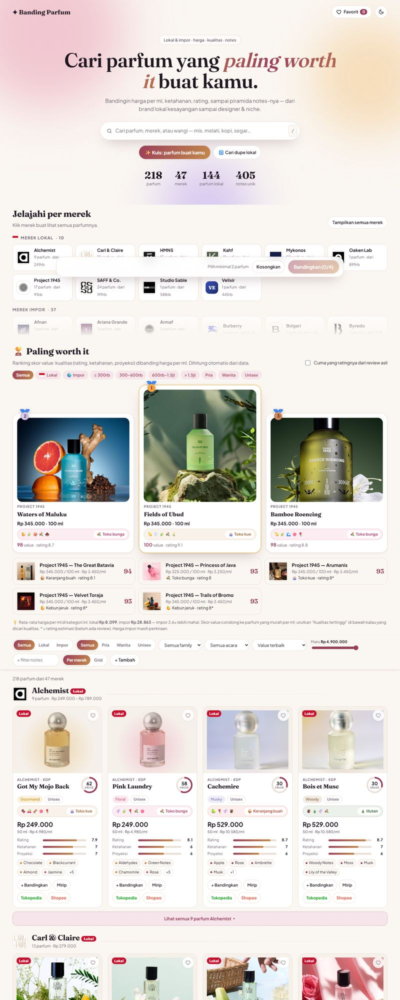
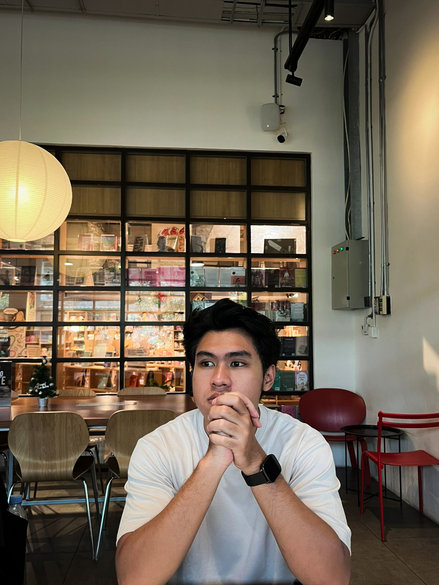
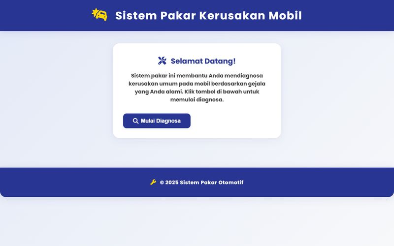
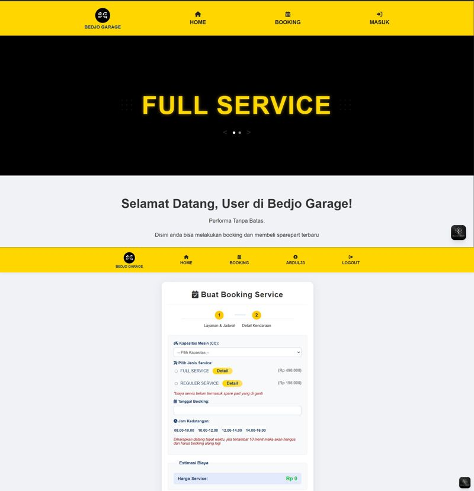
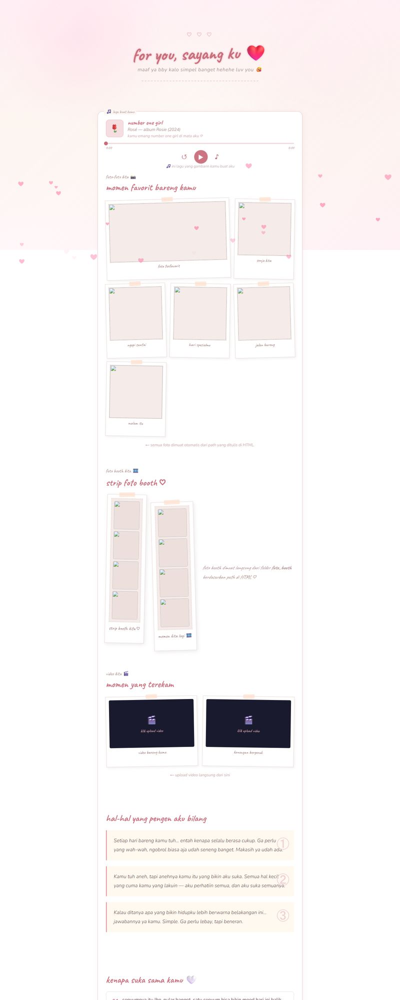

Open to work · Jakarta
// halo, saya
Angger Rizky Rambudia
> Programmer
Lulusan Sistem Informasi Universitas Gunadarma, sekarang Programmer & System Analyst di Anara Trisakti Medika. Saya membangun aplikasi web, mengolah data jadi insight, dan menerjemahkan kebutuhan bisnis menjadi sistem yang jalan.

3,76IPK dari 4,00
4Pengalaman kerja & magang
8Proyek
9Sertifikasi
Python
PHP
JavaScript
HTML & CSS
MySQL · SQLite
Pandas
Power BI
Tableau
YOLOv8 · OpenCV
Flask
ESP32
Git & GitHub
Vercel
Cisco Networking
01 · tentang
Dari data mentah sampai sistem jadi.
Saya terbuka untuk peran Programmer, System Analyst, Data Analyst, IT Support, maupun Technical Writer.
Saya Angger, Sarjana Komputer dari Program Studi Sistem Informasi Universitas Gunadarma (2022–2026). Di kampus saya belajar pemrograman, basis data, analisis sistem, dan analisis data. Skripsi saya membahas Market Basket Analysis dengan algoritma Apriori untuk menyusun rekomendasi bundling menu dari data transaksi.
Selama kuliah saya magang sebagai IT Intern di Kementerian Perhubungan RI dan Social Media Specialist di Rutee. Di luar kerjaan, saya suka bikin alat kecil yang menjawab pertanyaan sehari-hari, seperti Banding Parfum.
Web Development
Aplikasi web dengan PHP, JavaScript, dan MySQL/SQLite.
Data Analysis
Python (Pandas), Power BI, Tableau, dan Excel.
System Analysis
Analisis kebutuhan, perancangan, dan dokumentasi sistem.
Social Media
Konten, kalender posting, dan analisis performa.
02 · pengalaman
Tempat saya belajar kerja.
Dari dapur Starbucks sampai tim IT kementerian, tiap tempat mengajarkan cara kerja yang berbeda.
-
Programmer & System Analyst
Anara Trisakti Medika · Magang · Jakarta Timur
-
Social Media Specialist / Marketing Intern
Rutee · Magang · Remote
- Mengelola dan mengembangkan konten media sosial untuk meningkatkan engagement dan brand awareness.
- Menganalisis performa konten memakai insight dan metrik media sosial sebagai dasar evaluasi strategi.
- Membantu perencanaan kalender konten dan ide kampanye digital.
- Berkolaborasi dengan tim menjaga konsistensi branding dan komunikasi digital.
-
IT Intern
Kementerian Perhubungan Republik Indonesia · Magang · Jakarta Pusat
-
Kitchen Staff
Starbucks · Paruh waktu · Jakarta Timur
- Menyiapkan makanan sesuai standar kualitas dan kebersihan, serta mengelola inventaris bahan di dapur.
- Bekerja sama dengan tim barista untuk memenuhi pesanan pelanggan dengan cepat.
Pendidikan
Sep 2022 — Agt 2026
Universitas Gunadarma
S1 Sistem Informasi, Sarjana Komputer (S.Kom)
IPK 3,76 / 4,00 · Skripsi: Market Basket Analysis dengan algoritma Apriori
SMA
SMA Negeri 91 Jakarta
Ilmu Pengetahuan Sosial (IPS)
03 · proyek
Hal-hal yang saya bangun.
Preview di kartu diambil langsung dari web-nya. Arahkan kursor ke gambar untuk scroll halaman, atau buka demonya.


web app
Bedjo Garage
Website bengkel motor: booking servis dengan slot terbatas, pembayaran DP via QRIS dengan verifikasi admin, toko oli & sparepart, dan panel admin.

skripsi · data
Market Basket Analysis
Mencari menu yang sering dibeli bersamaan dari data transaksi, lalu menyusun rekomendasi bundling dengan Apriori dan association rules.
iot · computer vision
IoT Deteksi Umur
Webcam mendeteksi wajah dengan YOLOv8 dan memperkirakan umur. Hasilnya tampil di dashboard Flask dan dikirim ke ESP32 yang menampilkannya di LCD serta menyalakan LED.
spk · tugas kuliah
LaptopVerse — SPK SAW
Membantu memilih laptop sesuai prioritas pengguna dengan Simple Additive Weighting: normalisasi, pembobotan, lalu peringkat, perbandingan, dan favorit.
sistem pakar
Diagnosa Kerusakan Motor
Mengidentifikasi masalah motor dari gejala pengguna. Aturan diagnosa disimpan di database, jadi mudah ditambah tanpa mengubah kode.
detail per bidang → Web Development Data & AI Social Media
04 · keahlian
Alat yang saya pakai.
Bahasa pemrograman, tools data, dan kemampuan pendukung yang saya pakai di proyek dan pekerjaan.
Pemrograman
- Python
- PHP
- JavaScript
- HTML & CSS
- SQL
- C/C++
Data
- Pandas
- Power BI
- Tableau
- Excel
- Web Scraping
- Data Entry
Sistem
- System Analysis
- Project Management
- Cisco Networking
- Ethical Hacking
- Git
- Vercel
Kreatif
- Social Media Marketing
- SEO & Analytics
- Brand Awareness
- Canva
- CapCut
Bahasa Indonesia (profesional) · Bahasa Inggris (terbatas namun fungsional)
05 · sertifikasi
Terus belajar.
Pelatihan dan sertifikasi dari kampus, Pacmann, dan Digital Talent Scholarship. Klik sertifikat untuk melihat ukuran penuh.
- Feb 2026
Ethical Hacker For Dummies
Digital Talent Scholarship
- Sep 2025
Analyze Software Requirements
Universitas Gunadarma
- Des 2024
Introduction to Wireless LAN Installation
Universitas Gunadarma
- Agt 2023
Fundamental Networking
Universitas Gunadarma
- Feb 2023
Fundamental DBMS
Universitas Gunadarma
06 · kontak
Ada lowongan atau ide? Ngobrol yuk.
Saya terbuka untuk kerja penuh waktu, magang, maupun kolaborasi proyek. Biasanya saya balas dalam 1–2 hari.